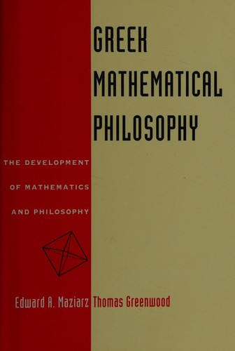

34:50 · 7 OPERE
DIvagazioni su teologia, logica e distanziamento dal divino.
Il filo del discorso
Una lettura della prefazione di Maziarz e Greenwood introduce la domanda su che cosa accada quando la volontà prende il posto del confronto con i fatti. Dr Divago collega il rapporto fra matematica e filosofia greca al problema della logica classica e alla sua interpretazione teologica medievale. La discussione passa poi alla trascendenza e a una lettura del racconto biblico come progressivo distanziamento dal divino, con esempi di ascolto, conversione e mancato riconoscimento. Nella seconda parte il relatore considera la nascita della filosofia attraverso il confronto fra tradizioni ioniche, pitagoriche e ateniesi. Cratilo e l’apertura della Repubblica accompagnano la riflessione sul rapporto fra dialogo, forza e vita civile. L’immagine della radio che scambia il rumore per musica riassume la sua critica a una volontà incapace di ascoltare.
I libri nel discorso

Greek Mathematical Philosophy
Note sul riferimento
Copertina: Barnes & Noble Books · riedizione 1995 · opera pubblicata da Ungar nel 1968
Copertina autentica della riedizione Barnes & Noble Books del 1995, distinta dall’edizione Ungar 1968 ricordata nel parlato. Non si attribuisce al video l’esemplare riprodotto.
Edward Maziarz, Thomas Greenwood, il 1968 e il contenuto della prefazione identificano il volume.

Bibbia
Note sul riferimento
Copertina: San Paolo, 2014 · Nuova Versione dai Testi Antichi · edizione di riferimento
Il testo biblico e la Bibbia ebraica e cristiana sono esplicitamente discussi.

Genesi
Identificazione probabile
Note sul riferimento
Copertina: Einaudi, I libri della Bibbia / Einaudi Tascabili, 2000; introduzione di Steven Rose
Copertina dell’edizione autonoma Genesi, nella serie I libri della Bibbia, con introduzione di Steven Rose. Edizione scelta come riferimento iconografico; nessuna edizione è confermata nel video.
Adamo, Eden e il passaggio alle età successive rendono probabile il riferimento a Genesi.

Qoèlet (Ecclesiaste)
Note sul riferimento
Copertina: Adelphi, Biblioteca Adelphi 414, 2001
Edizione autonoma del libro biblico, versione e commenti di Guido Ceronetti. Non è una copertina della Bibbia integrale né un’edizione confermata nel video.
Qoèlet è nominato nel parlato; la formula sulla sapienza che grida è però riscontrata nei Proverbi, non assegnata a Qoèlet come citazione esatta.
Proverbi
Identificazione probabile
Note sul riferimento
Copertina della Bibbia che contiene Proverbi: San Paolo, 2014 · Nuova Versione dai Testi Antichi · edizione di riferimento
Copertina dell’intera Bibbia. Non rappresenta un’edizione autonoma dei Proverbi e non identifica l’edizione citata nel video.
La sapienza che grida nelle strade corrisponde a Proverbi 1,20, benché il parlato la attribuisca a Qoèlet.

Cratilo
Note sul riferimento
Copertina: Carocci · 2022
Copertina autentica controllata visivamente. Edizione di riferimento; non identifica l’esemplare usato o citato nel video.
Cratilo è annunciato nel confronto su Platone ed Eraclito.

La Repubblica
Note sul riferimento
Copertina: Laterza · La Repubblica · edizione con testo a fronte di riferimento
Immagine associata all’ISBN di riferimento e controllata visivamente; edizione e traduzione non identificate come quelle citate o lette nel video.
Politeia e Repubblica sono nominate nella discussione della scena iniziale al Pireo.